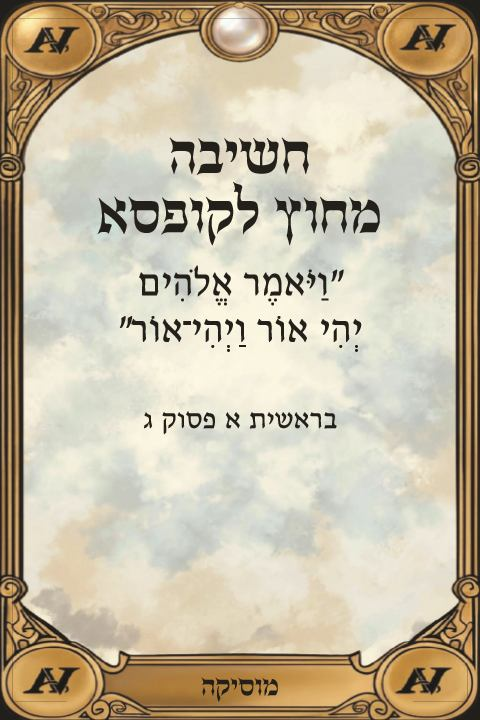

באבא
כל הקלפים
להזמנת החפיסה
באבא
›
כל הקלפים
› אלמנט אוויר

חשיבה מחוץ לקופסא
אלמנט אוויר
משמעות הקלף
היכולת לפתח דמיון וחשיבה דרך מוסיקה.
להזמנת חפיסת באבא
עוד קלפים באלמנט אוויר
הוצאה לאור
התפכחות
צמיחה מתוך החשיכה
החלטה שכלית
התעלמות
ניתוק
התגברות על רגשות שליליים
לחתוך הפסדים
יכולת לרומם את עצמך
→ התגברות על רגשות שליליים
ניתוק ←